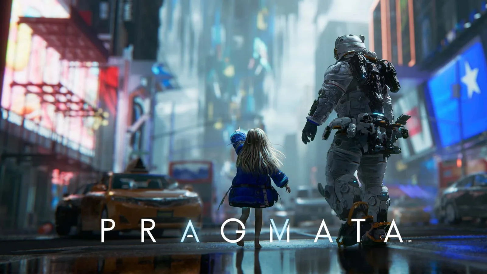
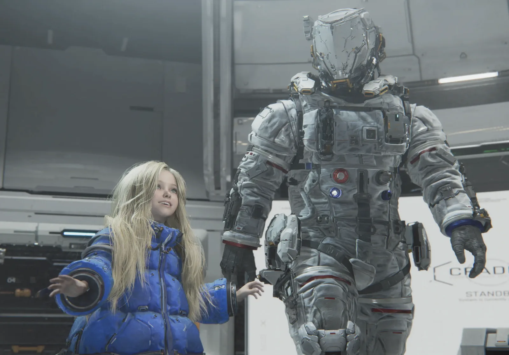
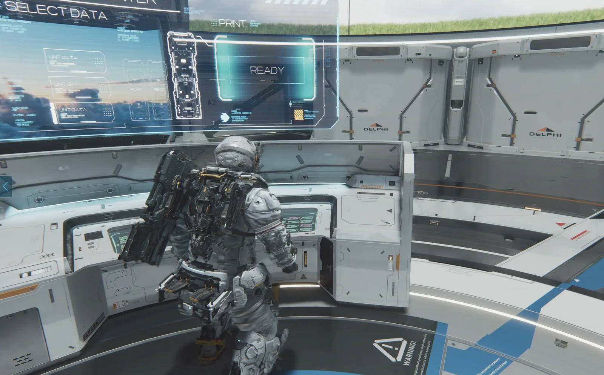
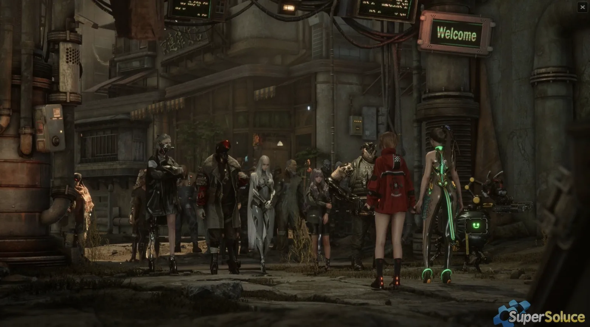
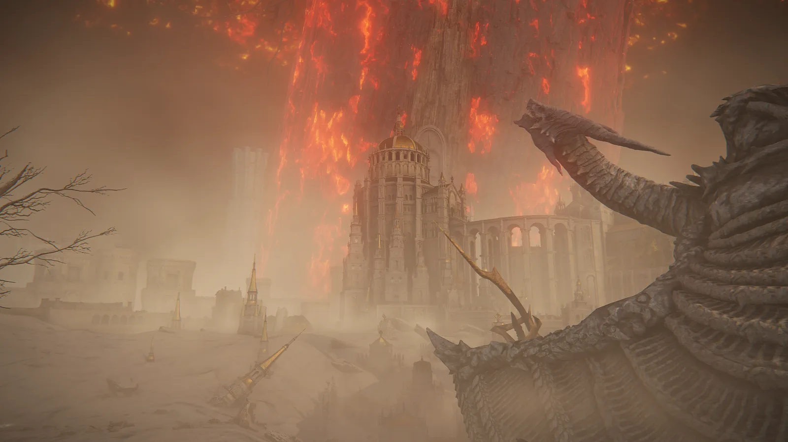
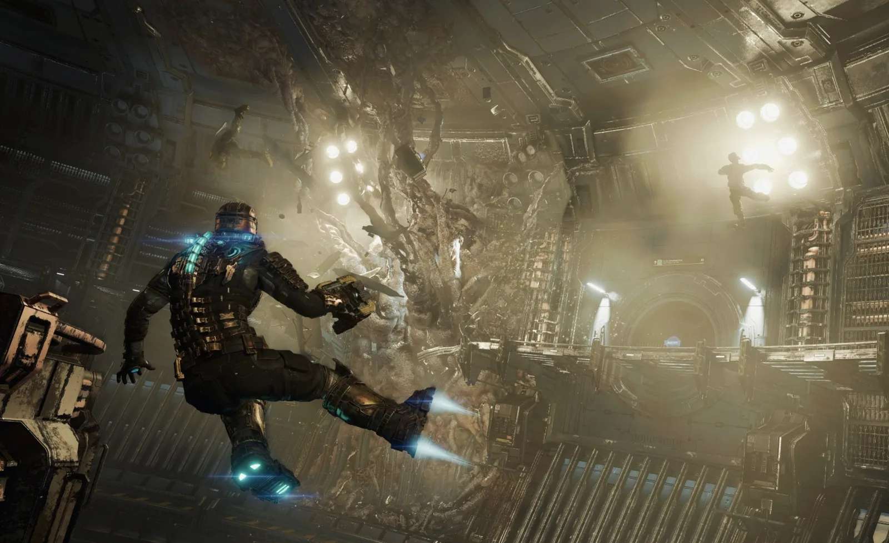
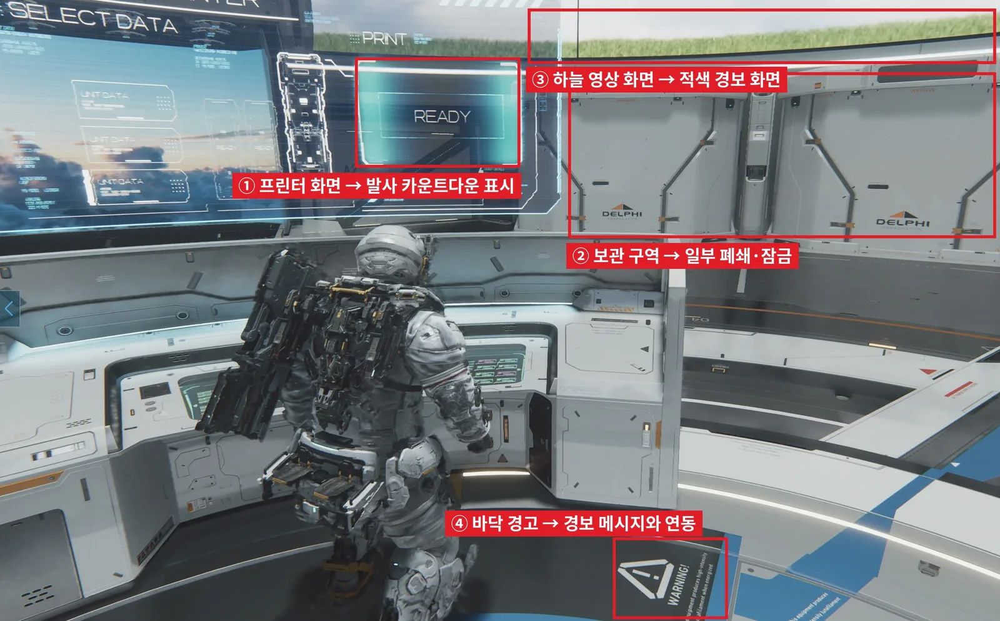
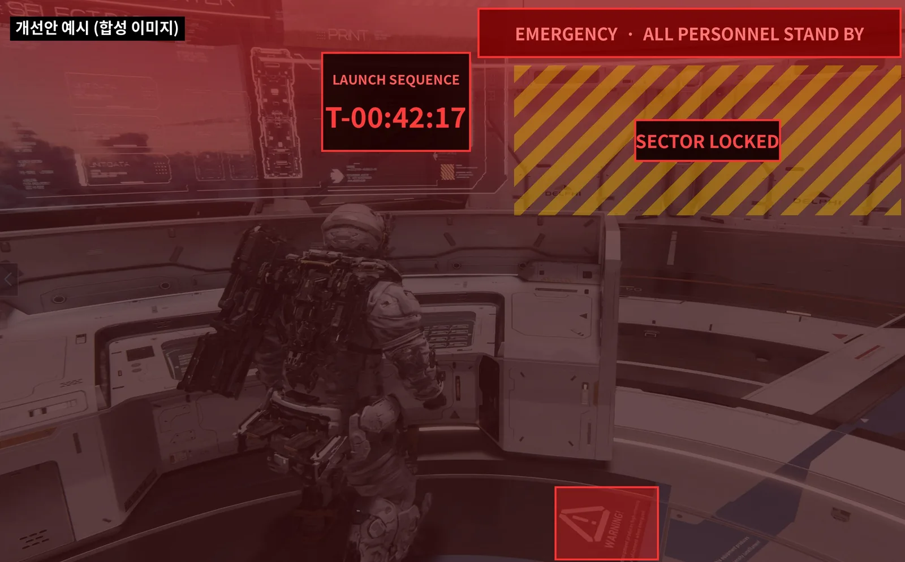

고찰 · 프래그마타
프래그마타 레벨 디자인 고찰
다시 찾아가는 이유는 긴박함과 맞물리는가
- 문제
- 휴고가 죽어 가는 가장 긴박한 후반부에, 레벨 구조는 이전 지역을 천천히 돌며 수집하도록 유도한다.
- 원인
- 게이팅 자체가 아니라, 재방문 동기와 최종 보스전 직전 셸터의 연출이 위기 상황을 반영하지 않는다.
- 제안
- 구조는 유지하고 재방문을 메인 경로 · 위기 대응과 연결하며, 최종 셸터를 결전 전용 연출로 바꾼다.
캡콤의 신작 게임 프래그마타는 분명 재밌는 게임이었다. 휴고와 다이애나라는 매력적인 두 인물을 중심으로 전개되는 스토리와, 스토리에 따라 깊어지는 두 사람의 관계, 그리고 해킹과 사격을 함께 운용하는 전투 시스템이 매력적인 게임이었다. 특히 해킹 퍼즐을 풀면서 전투를 진행하는 방식은 기존 슈팅 게임과 구분되는 신선한 조작 경험을 제공해줬으며, 이는 전투를 지속하기 위해 맵의 숨겨진 곳을 탐험하고 모든 훈련 및 도전 과제를 클리어하는 데에 큰 동기부여를 줬다.
분명 프래그마타는 너무나도 잘 만든 게임이지만, 그럼에도 아쉬운 점이 있었다. 바로 서사적 몰입감을 제공하는 레벨 디자인에서 큰 아쉬움이 있었는데, 이 글을 통해서 프래그마타 레벨 디자인에 대한 필자의 생각과 고찰을 짧게나마 나눠보고자 한다.

1. 문제 제기
프래그마타를 플레이하면서 가장 먼저 눈에 들어온 레벨 디자인의 특징은 권한과 능력에 따라 갈 수 있는 길과 갈 수 없는 길이 나뉜다는 점이었다. 처음에는 닫혀 있던 문과 닿지 않던 길이 새로운 능력을 얻을수록 하나씩 열리고, 후반부에 모든 능력이 갖춰지면 이전 지역을 다시 돌며 수집 요소를 모을 수 있게 된다. 이런 설계를 흔히 게이팅이라고 부른다.
게이팅(gating)은 특정 조건을 갖추기 전까지 플레이어가 갈 수 있는 범위를 제한하는 레벨 디자인 기법이다. 조건은 점프나 해킹 같은 능력일 수도 있고, 보안 등급이나 키 같은 권한, 혹은 스토리 진행도일 수도 있다. 플레이어는 초반에 들어갈 수 없던 구역을 기억해 두었다가, 조건을 갖춘 뒤 돌아와 길을 열고 보상을 얻는다.
이 기법이 널리 쓰이는 데에는 이유가 있다. 설계자는 난이도와 서사가 전개되는 순서를 의도한 대로 통제할 수 있고, 플레이어는 새 능력을 얻는 순간 막혀 있던 길이 열리면서 그 능력의 가치를 바로 체감한다. 같은 지역을 다시 쓰게 되니 제작 규모에 비해 플레이 시간을 늘리는 효과도 있다.
프래그마타 역시 능력과 권한을 모두 조건으로 쓴다. 한 리뷰는 이를 후반 능력으로 잠긴 구역이 있는 가벼운 메트로배니아* 요소라고 표현했다.
* 메트로배니아: 능력을 얻을수록 탐험할 수 있는 범위가 넓어지는 구조의 게임. 메트로이드와 캐슬바니아 시리즈에서 이름이 유래했다.
그런데 이 구조를 스토리와 함께 놓고 보면 의문이 생긴다. 주인공 휴고는 데드필라멘트*에 노출되어 죽어가고 있고, 에이트*는 데드필라멘트를 지구로 보내 지구 문명을 파괴하려 한다. 이야기는 플레이어에게 서두르라고 말하는데, 레벨 구조는 오히려 가장 긴박한 후반부에 지역을 천천히 돌아보며 수집하도록 유도한다.
* 데드필라멘트: 프래그마타 세계관의 유독 물질. 휴고는 다이애나를 지키다 이 물질에 감염된다.
* 에이트: 데드필라멘트로 지구를 오염시키려는 안드로이드. 이 게임의 최종 적이다.
필자는 이 불일치가 게이팅이라는 구조 자체의 결함인지, 아니면 그 위에 얹힌 동기와 연출의 문제인지를 짚어보려 한다.
2. 문제의 위치: 게이팅이 아니라 재방문 동기
결론부터 말하면, 필자는 문제가 게이팅 자체에 있지 않다고 본다. 게이팅은 이미 수많은 게임에서 검증된 방식이다. 문제는 재방문의 동기가 스토리의 긴박함과 따로 논다는 점, 그리고 그 재방문이 게임 흐름의 어디에 놓여 있느냐다.
메트로이드 드레드를 떠올려 보면 차이가 분명하다. 사무스 역시 급박한 상황에 놓여 있지만, 이전 지역을 다시 지나는 일이 대부분 메인 진행 경로 위에서 일어나기 때문에 큰 부조화가 느껴지지 않는다. 되돌아가는 것 자체가 앞으로 나아가는 과정이기 때문이다. 반면 프래그마타의 재방문은 서사가 가장 긴박한 후반부에 몰려 있고, 그래서 부조화가 더 크게 다가온다.
3. 최종 보스전 직전 셸터: 모순된 분위기를 조성하는 연출
부조화가 가장 크게 느껴진 순간은 에이트와의 마지막 보스전 직전, 셸터*로 돌아갈 수 있는 구간이었다. 여기서 플레이어는 다이애나와 대화하고 REM*과 시간을 보낼 수 있는데, 분위기는 평소의 셸터와 크게 다르지 않다. 에이트는 데드필라멘트를 가득 실어 지구로 보내려 하고 휴고는 죽어가고 있는데, 후반부의 셸터는 이런 상황을 거의 반영하지 않는다.
* 셸터: 휴고와 다이애나의 거점. 무기 제작과 업그레이드를 하고, 트램을 타고 각 탐험 구역으로 출발한다.
* REM(Read Earth Memory): 지구의 가구, 장난감, 추억의 물건 등의 구조 데이터가 담긴 오브젝트. 루나필라멘트를 이용해 물건을 복제하거나 다이애나에게 선물로 줄 수 있다.
물론 이 구간의 구조와 연출은 나눠서 볼 필요가 있다. 최종 보스전 전에 거점으로 돌아가 저장하고 정비하고 마지막 수집을 할 수 있게 하는 것은 플레이어 편의를 위해 필요한 장치다. 되돌아갈 수 없는 지점 이후에 수집을 놓쳐 불이익을 보는 일을 막아 주기 때문이다. 아쉬운 것은 연출이다. 같은 공간에서 평소와 같은 톤의 상호작용이 이어지면, 이야기가 말하는 위기가 플레이 경험으로 전달되지 않는다. 그 순간 플레이어는 스토리의 긴박함을 하나의 장치로 느끼게 된다.
결국 이 장면의 문제는 되돌아갈 수 있다는 사실이 아니다. 되돌아갔을 때 셸터의 분위기에서도, 인물 간의 상호작용에서도 긴박함이나 위기감이 느껴지지 않고, 마치 아무 일도 없는 것처럼 흘러간다는 점이다.


4. 비교 사례: 최종 국면에서 거점 탐험을 다루는 방식
최종 국면을 앞두고 거점과 탐험 범위를 어떻게 다루는지는 게임마다 다르다. 필자가 직접 플레이한 게임 가운데 스텔라 블레이드와 엘든 링을 고른 데에는 이유가 있다. 두 게임 모두 서사를 강조하는 액션 게임이고, 플레이어가 돌아오는 거점과 최종 국면으로 넘어가는 지점이 분명해 프래그마타와 같은 기준으로 비교할 수 있다. 동시에 스텔라 블레이드는 거점 마을을 중심으로 지역을 오가는 구조, 엘든 링은 거대한 오픈필드 구조로 성격이 서로 달라, 구조가 달라도 같은 원리가 통하는지 확인할 수 있다.
| 사례 | 구조 | 긴박함과의 관계 |
|---|---|---|
| 스텔라 블레이드 | 마지막 챕터를 진행하기 전, 플레이어에게 돌아갈 수 없다고 미리 경고를 띄운다. 최종 보스 직전 거점 마을인 자이온*으로 돌아가면 입구에 상주하고 있는 NPC와 기본 상호작용을 통해 간단한 재정비만 가능하다. 이전 스토리에서 마을이 파괴되었기 때문에 내부로는 진입할 수 없다. | 마을의 상태와 접근 범위가 플레이에 영향을 미치며, 이러한 제약을 납득할 수 있는 충분한 설명을 제공하고 있다. |
| 엘든 링 | 초반의 림그레이브, 알터 고원, 케일리드 등은 대형 오픈필드로 탐험의 자유를 준다. 후반부에 방문하는 설산 지역은 이에 반해 선형적인 구조로 필드가 설계되어있으며, 거점인 원탁*의 NPC 일부가 떠나거나 사망한다. 최종 스테이지인 로데일은 재의 도읍 로데일*로 바뀌어 맵의 지형과 분위기가 크게 변한다. | 맵 구조, 거점, 분위기가 모두 스토리와 게임의 끝이 다가오고 있다는 느낌을 준다. |
| 프래그마타 | 최종 보스전 직전 셸터에서의 상호작용이 평소와 크게 다르지 않다. 다이애나와 휴고 간의 대화 내용이 당장 스토리를 반영하긴 하지만, 이외의 요소에서 크게 위기감이 느껴지지 않는다. | 평상시와 동일한 분위기가 위기감과 긴박함을 온전히 전달하지 못하며, 몰입감을 해친다. |
* 자이온: 스텔라 블레이드의 거점 마을. 퀘스트를 받고 상점과 NPC를 이용하는 곳이다.
* 원탁: 엘든 링의 거점인 원탁 회의장. 주요 NPC가 모여 있는 곳이다.
* 재의 도읍 로데일: 황금나무가 불타면서 재로 덮인 왕도 로데일. 엘든 링의 최종 지역이다.
두 게임을 보면 거점 구조 자체가 서사의 긴박함을 해치는 것은 아니라는 점을 알 수 있다. 중요한 것은 대화와 환경, 안내가 위기 상황을 반영하느냐다. 스텔라 블레이드는 최종 국면의 거점을 폐허로 바꿔 기능과 접근 범위를 제한했고, 엘든 링은 거점 NPC의 변화와 맵 분위기의 전환, 후반 진행의 선형화를 통해 끝이 다가오고 있음을 느끼게 했다. 스토리를 강조하는 게임일수록 이런 변화가 주는 몰입감은 크다. 반면 프래그마타의 셸터는 이런 변화 없이 평소와 같은 모습을 유지한다.


5. 사례 분석: 데드 스페이스의 재방문 구조
데드 스페이스는 재방문을 위기 상황의 악화와 함께 설계한 좋은 예다. 주인공 아이작은 여자친구 니콜의 구조 신호를 받고 USG 이시무라*에 들어가는데, 서사의 긴박함만 놓고 보면 프래그마타와 크게 다르지 않다. 아래 내용은 리메이크 판에 대한 리뷰와 위키백과를 근거로 한다.
* USG 이시무라: 데드 스페이스의 무대가 되는 대형 채굴선.
데드 스페이스의 이시무라는 구역들이 직접, 혹은 트램으로 연결된 하나의 공간이고, 스토리가 진행될수록 새로운 구역이 열린다. 잠긴 문과 보관함은 전력을 우회하거나 보안 등급을 올려 열 수 있고, 보안 키와 몇 가지 사이드 퀘스트가 이전 구역으로 돌아갈 이유를 만들어 준다.
눈여겨볼 점은 돌아간 공간이 그대로가 아니라는 것이다. 리뷰는 재방문이 플롯에 따라 변하는 반응형 세계 안에서 이루어지며, 플레이할수록 이시무라가 점점 더 이상해진다고 평가했다. 물론 보안 키 관련 업그레이드가 조금 길게 늘어졌다는 지적도 함께 있었다.
프래그마타와 나란히 놓으면 차이가 더 분명해진다.
| 항목 | 데드 스페이스 (리메이크) | 프래그마타 |
|---|---|---|
| 재방문 공간 | 스토리 진행에 따라 열리는 연결된 하나의 환경 | 전반부 지역을 후반부 능력 획득 후 재탐험 |
| 재방문 보상 | 보안 키, 소수의 사이드 퀘스트 | 수집 요소와 업그레이드 |
| 공간의 상태 | 진행할수록 이시무라가 악화된다 | 평상시와 동일하다 |
| 서사와의 연결 | 재방문이 플롯 변화 속에서 이루어진다 | 재방문 동기가 서사의 긴박함과 분리되어 있다 |
데드 스페이스는 게이팅과 재방문 구조를 그대로 두면서도, 돌아가는 공간이 위기 상황을 반영하도록 만들었다. 앞서 말한 것처럼 문제는 게이팅 자체가 아니라, 다시 찾아가는 이유와 그 공간의 상태가 서사와 이어져 있느냐에 있다는 것을 이 사례가 잘 보여준다.

6. 개선 방향: 구조는 유지하고 동기와 연출을 강화한다
필자가 생각하는 개선의 방향은 게이팅과 재방문 구조를 바꾸는 것이 아니라, 다시 찾아가는 이유를 스토리의 긴박함과 맞추는 것이다. 레벨 디자인 관점에서 다섯 가지를 제안해 본다.
- 재방문을 메인 경로에 편입: 새 능력으로 이전 지역을 통과해야 하는 구간을 주 진행 경로 위에 둔다. 되돌아가는 행위가 공략의 일부가 되어 서사와 충돌하지 않는다.
- 수집 보상을 위기 대응과 연결: 수집품이 휴고의 생존이나 데드필라멘트 대응과 직접 연결되면 탐험이 목표 달성에 필요한 준비 행위로 읽힌다.
- 이야기 안에 시간 여유 만들기: 에이트의 발사 준비 시간처럼 지금은 쉴 수 있는 이유를 서사 안에서 제시한다. 탐험 시간이 서사 안에서 정당화된다.
- 최종 셸터를 결전 전용 연출로 교체: 거점의 일부를 폐쇄하거나 NPC의 상태를 바꾸고, 대화·조명·경보·카운트다운 등으로 위기 상황을 공간 안에서 계속 제시하고, 다이애나와 REM과의 상호작용을 작별을 의식한 내용으로 바꾼다.
- 되돌아올 수 없는 지점 명시: 최종 진입 전에 수집 완료 여부를 확인할 수 있도록 경고를 제공하고, 이후에는 긴박함이 끊기지 않도록 한다.
아래는 4번 방안을 현재 셸터 화면에 적용해 본 예시다.


다만 개연성을 더하는 장치가 많아질수록 주의할 점도 있다. 장면마다 대사나 컷신으로 이유를 설명하면 개연성은 생기지만, 읽어야 할 텍스트가 늘어나 많은 플레이어가 연출을 건너뛰게 된다. 그래서 위의 방안은 텍스트보다 공간으로 전달하는 쪽이 맞다고 본다. 경보음, 조명, 화면 표시, 닫힌 구역처럼 플레이어가 움직이는 동안 자연스럽게 보고 듣는 요소로 상황을 알리고, 대사는 짧게, 플레이를 멈추지 않는 방식으로 넣는 것이다. 연출을 건너뛰는 플레이어에게도 공간 자체가 위기를 보여 주어야 개연성과 속도를 함께 지킬 수 있다.
엔딩 이후의 자유 탐험으로 완전 수집을 분리하는 방법도 있다. 다만 지금 가장 문제가 되는 지점이 보스전 직전 구간인 만큼, 위의 다섯 가지를 먼저 고민해 보는 것이 맞다고 본다.
7. 결론
정리하면, 프래그마타의 게이팅과 재방문 구조는 그 자체로 결함이 아니다. 아쉬운 것은 다시 찾아가는 동기가 서사의 긴박함과 맞물리지 않는다는 점이다. 휴고가 죽어가고 에이트가 위협을 실행에 옮기려는 상황에서 후반부 수집은 이야기 안에서 설명되지 않고, 최종 보스전 직전의 셸터는 평소와 같은 분위기로 플레이어를 맞는다.
구조는 그대로 두되 재방문을 메인 경로와 연결하고 최종 셸터에 위기 상황을 담아냈다면, 프래그마타의 마지막은 훨씬 더 강하게 기억에 남았을 것이다. 필자는 좋은 레벨 디자인을 판단하는 기준이 어디로 갈 수 있느냐가 아니라, 플레이어가 그 공간을 다시 찾는 이유가 이야기와 맞닿아 있느냐에 있다고 생각한다.